Overview
CRYENGINE contains several Audio Entities and Flow Graph nodes which are detailed below.
Audio Trigger Spot
The Audio Trigger Spot triggers an event on a specific position. This position can be automatically randomized from the entity position on each axis and/or with time delays.
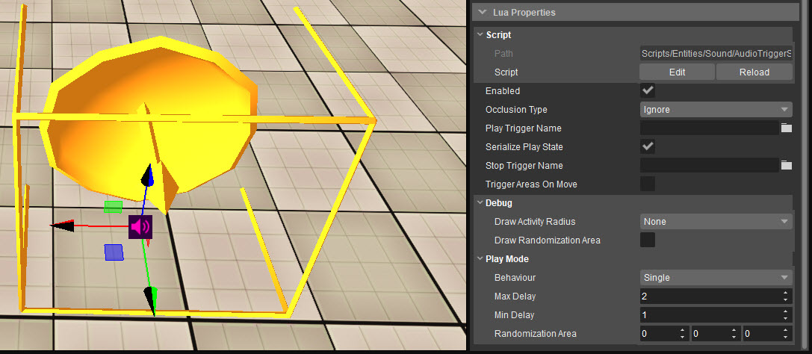
Property | Description |
|---|---|
Enabled | Defines if the entity is enabled (playing) or disabled (not playing). |
Occlusion Type | Sets the number of ray casts that are used to calculate the obstruction. Using more ray casts requires a greater performance, but it creates a more accurate result.
|
Play Trigger Name | Name of the play event. |
Serialize Play State | Defines if the play state of the entity gets saved/loaded at checkpoints. |
Stop Trigger Name | Name of the stop event. If no stop event is assigned, the sound will stop playing immediately once the respective Flow Graph node input is triggered. |
Trigger Areas On Move | Allows the ATS to receive updates from the Area Management System. Useful, for example, when entering an area that is linked to an environment to apply those environment values on this ATS. |
Debug
Property | Description |
|---|---|
Draw Activity Radius |
|
Draw Randomization Area | Displays a box around the area where the randomization of the ATS is applied. This area represents the value set in Play Mode → Randomization Area. |
Play Mode
Property | Description |
|---|---|
Behaviour |
|
Max Delay | The maximum delay in seconds that it will take to execute the trigger when Behaviour is set to Delay or Trigger Rate. |
Min Delay | The minimum delay in seconds that it will take to execute the trigger when Behaviour is set to Delay or Trigger Rate. |
Randomization Area | The area box in meters in which the sound gets positioned randomly when Behaviour is set to Delay or Trigger Rate. |
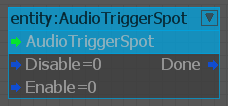
| Node Input | Description |
|---|---|
Disable | Stops the sound. If available, triggers the event set in the Stop Trigger Name property. |
Enable | Starts the sound. Triggers the event set in the Play Trigger Name property. |
| Node Output | Description |
|---|---|
| Done | Outputs when the event started by the play trigger has finished playing. |
Audio Area Entity
The Audio Area Entity is used to play ambient sounds in an area. Therefore, the entity needs to be linked to an Area Shape, Area Box, Area Sphere or Area Solid.
The Audio Area Entity is the advanced method of setting up ambient sounds in levels and requires a Flow Graph logic to play and control the Ambient sound. This opens up many possibilities and gives advanced control over the ambiance. When setting up a basic ambient sound, use the Audio Area Ambience entity which does not require any Flow Graph logic.
Examples of this setup can be found in the CRYENGINE Sandbox Editor showcase levels.
To learn how to set up ambient sounds in a level, take a look at the Audio & Ambience page.
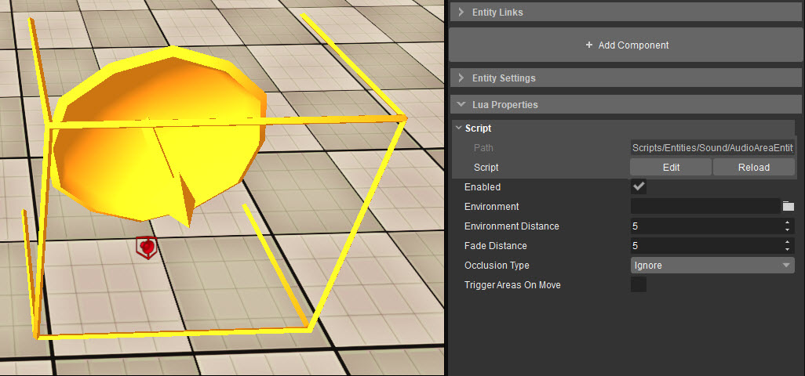
Property | Description |
|---|---|
Enabled | Defines if the entity is enabled (playing) or disabled (not playing). |
Environment | Defines the name of the audio system environment used inside the connected shape. |
Environment Distance | The distance in meters from the edge of the assigned shape where the fading of the environment begins. |
Fade Distance | The distance in meters from the edge of the assigned shape where the Flow Graph node is starting to output values. |
Occlusion Type | Sets the number of ray casts that are used to calculate the obstruction. Using more ray casts requires a greater performance, but it creates a more accurate result.
|
| Trigger Areas On Move | Allows the ATS to receive updates from the Area Management System. Useful, for example, when entering an area that is linked to an environment to apply those environment values on this ATS. |
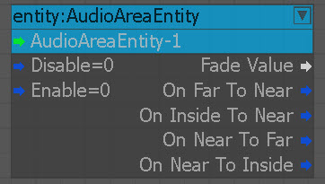
| Node Input | Description |
|---|---|
| Disable | Disables the entity. |
| Enable | Enables the entity. |
| Node Output | Description |
|---|---|
| Fade Value | Normalized value (0, 1) of the Fade Distance when the player approaches the shape. |
| On Far To Near | Player enters the fade distance. |
| On Inside To Near | Player leaves the shape. |
| On Near To Far | Player leaves the fade distance. |
| On Near To Inside | Player enters the shape. |
Audio Area Ambience
The Audio Area Ambience is used to setup a simple ambiance in an area without having to define its functionality in Flow Graph. It is used when setting up basic Ambient shapes in levels that do not require a more complex functionality. Therefore the entity needs to be linked to an Area Shape, Area Box, Area Sphere or Area Solid.
Please check that the Area Shape, Area Box, Area Sphere, or Area Solid has no flipped faces.
If you want to create ambiences with more control in Flow Graph, use the Audio Area Entity.
To learn how to set up ambient sounds in a level then take a look at the following documentation: Ambiences.
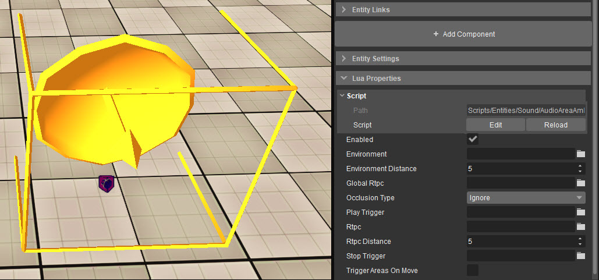
| Property | Description |
|---|---|
Enabled | Defines if the entity is enabled (playing) or disabled (not playing). |
Environment | Defines the name of the audio system environment used inside the connected shape. |
Environment Distance | The distance in meters from the edge of the assigned shape where the fading of the environment begins. |
| Global Rtpc | Set a global RTPC that can be picked up by other sound objects. |
| Occlusion Type | Sets the number of ray casts that are used to calculate the obstruction. Using more ray casts requires a greater performance, but it creates a more accurate result.
|
Play Trigger | Name of the play event. |
Rtpc | Set the RTPC that is controlling the playing sound object. |
Rtpc Distance | The distance in meters from the edge of the assigned shape where the connected RTPC is starting to receive values. The values sent to the RTPC are always in a normalized range from 0 to 1. |
Stop Trigger | Name of the stop event. |
| Trigger Areas On Move | Allows the ATS to receive updates from the Area Management System. Useful, for example, when entering an area that is linked to an environment to apply those environment values on this ATS. |
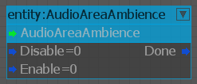
| Flownode Input | Description |
|---|---|
| Disable | Disables the entity. |
| Enable | Enables the entity. |
| Node Output | Description |
|---|---|
| Done | Outputs when the event started by the play trigger has finished playing. |
Audio Area Random
The Audio Area Random triggers randomized one shots in a confined area. Therefore the entity needs to be linked to an Area Shape, Area Box, Area Sphere or Area Solid. The sound is randomly triggered and positioned in a radius around the listener, provided that they are inside of the connected area.
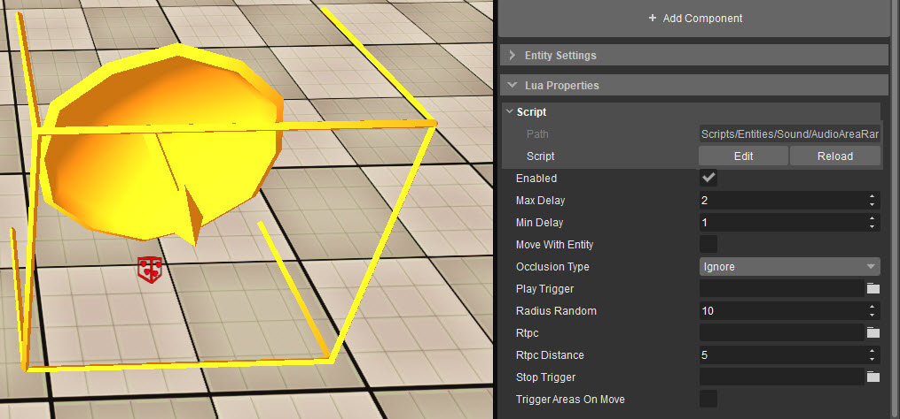
| Property | Description |
|---|---|
Enabled | Defines if the entity is enabled (playing) or disabled (not playing). |
Max Delay | The maximum delay in seconds it will take to trigger the sound. |
Min Delay | The minimum delay in seconds it will take to trigger the sound. |
Move With Entity | When enabled, the sound will move in relation to the listener after it has spawned; otherwise it stays at its initial position. |
Occlusion Type | Sets the number of ray casts that are used to calculate the obstruction. Using more ray casts requires a greater performance, but it creates a more accurate result.
|
Play Trigger | Name of the Play event. |
Radius Random | Defines the size of the radius in meters where sounds spawn around the listener. |
Rtpc | Set the RTPC that is controlling the playing sound object. |
Rtpc Distance | The distance in meters from the edge of the assigned shape where the connected RTPC is starting to receive values. The values sent to the RTPC are always in a normalized range from 0 to 1. |
Stop Trigger | Name of the stop event. |
| Trigger Areas On Move | Allows the ATS to receive updates from the Area Management System. Useful, for example, when entering an area that is linked to an environment to apply those environment values on this ATS. |
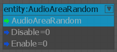
Flownode Input | Description |
|---|---|
Disable | Disables the entity. |
Enable | Enables the entity. |
Audio:Preload Flow Graph Node
The Preload Flow Graph node can load and unload a preload request to optimize memory consumption.
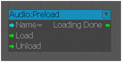
Node Input | Description |
|---|---|
Name | Name of the preload request that should be loaded or unloaded. |
Load | Loads the preload request. |
Unload | Unloads the preload request. |
| Node Output | Description |
|---|---|
| Loading Done | Sends a signal when the preload request is successfully loaded, or fails to load. |
In CRYENGINE 5.6.3, this Flownode replaces the Audio:PreloadData node. The functionality of both nodes are the same, although the Audio:PreloadData node has been marked as obsolete for backwards compatibility.
Audio:Parameter Flow Graph Node
The Parameter Flow Graph node sets the value of a Game Parameter.
If an Entity is assigned to the Audio:Parameter Flow Graph node, the Parameter assigned to the Name input will only change parameters of the assigned Entity. If no Entity is assigned however, the Parameter assigned to the Name input will change the parameters of all Entities.
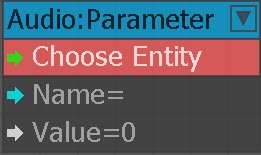
Node Input | Description |
|---|---|
Name | Name of the Parameter. |
Value | Sets the Parameter's value. |
- An Audio:Parameter that is not assigned to an Entity will set connected Game Parameter(s) on all Game Objects in Wwise.
- An Audio:Parameter that is assigned to an Entity will only set the connected Game Parameter(s) on the Game Object corresponding to the assigned Entity in Wwise.
- In Wwise you can monitor the RTPC changes for an Entity in the Game Object Profiler layout.
In CRYENGINE 5.6, this Flownode replaces the Audio:RTPC node. The functionality of both nodes are the same, although the Audio:RTPC node has been marked as obsolete for backwards compatibility.
Audio:SwitchState Flow Graph Node
The SwitchState Flow Graph node is used to to set an audio Switch State.
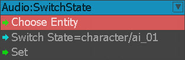
Node Input | Description |
|---|---|
Switch State | Name of the Switch State |
Set | Sets the corresponding Switch to the specified Switch State. |
- A Switch State connected to a Wwise Switch will only set the Wwise Switch on a Game Object corresponding to the assigned Entity.
- A Switch State connected to a Wwise Switch without an assigned Entity will be set on the dummy Game Object in Wwise.
- A Switch State connected to a Wwise State will always set the State globally, regardless of the assigned entity.
In CRYENGINE 5.6, this Flow Graph node replaces the Audio:Switch node which has been marked as obsolete for backwards compatibility.
The Audio:Switch node allowed Switches to be set to unrelated States, which caused errors. The Audio:SwitchState node overcomes this drawback, and it is hence recommended to use it for all new Flow Graph setups henceforth.
Audio:Trigger Flow Graph Node
The Trigger Flow Graph node simply triggers events.
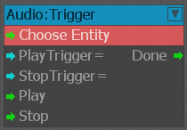
Node Input | Description |
|---|---|
Play Trigger | The name of the event. This doesn’t necessarily need to be a play event; any event can be triggered with this node. |
Stop Trigger | The name of the event. This doesn’t necessarily need to be a stop event; any event can be triggered with this node. |
Play | Triggers the event defined in the PlayTrigger input. |
Stop | Triggers the event defined in the StopTrigger input. |
| Node Output | Description |
|---|---|
| Done | Activates when all of the trigger events have finished playing. |
An audio system Trigger without an entity assigned will be executed on the Dummy Game Object in Wwise.
An audio system Trigger with an entity assigned will be executed on the Game Object corresponding to the assigned entity.
Audio: TriggerWithCallbacks Flow Graph Node
The Audio:TriggerWithCallbacks Flow Graph node works like the Audio:Trigger node; but in addition to its main function, it also lets the user to choose whether to get callbacks from the middleware or not.
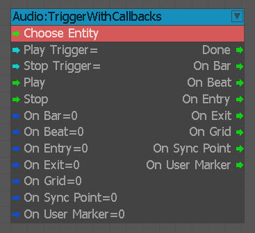
| Node Input | Description |
|---|---|
| Play Trigger | The name of the event. This doesn’t necessarily need to trigger a play event; any event can be triggered with this node. |
| Stop Trigger | The name of the event. This doesn’t necessarily need to be a stop event; any event can be triggered with this node. If no event is defined and a sound was started on the corresponding Play Trigger, it will stop at once when the stop input is triggered. |
| Play | Triggers the event defined in the Play Trigger input. |
| Stop | Triggers the event defined in the StopTrigger input. |
| On Bar | If enabled, On Bar output will fire on every bar of the middleware event(s), which is/are connected to the audio trigger specified in the Play Trigger input. |
| On Beat | If enabled, the On Beat output will fire on every beat of the middleware event(s), which is/are connected to the audio trigger specified in the Play Trigger input. |
| On Entry | If enabled, the On Entry output will fire when the middleware event(s), which is/are connected to the audio trigger specified in the Play Trigger input, reaches the entry cue. |
| On Exit | If enabled, the On Exit output will fire when the middleware event(s), which is/are connected to the audio trigger specified in the Play Trigger input, reaches the entry cue. |
| On Grid | If enabled, the On Grid output will fire on every grid of the middleware event(s), which is/are connected to the audio trigger specified in the Play Trigger input. |
| On Sync Point | If enabled, the On Sync Point output will fire on every sync point of the middleware event(s), which is/are connected to the audio trigger specified in the Play Trigger input. |
| On User Marker | If enabled, the On User marker output will fire on every marker that the user has set manually in the middleware event(s), which is/are connected to the audio trigger specified in the Play Trigger input. |
| Node Output | Description |
|---|---|
| Done | Activates when all of the trigger events have finished playing. |
Wwise supports all callbacks in the node for music events.
- With the exception of On User Marker, none of the callbacks need any additional setup from the user in Wwise.
- To get the On User Marker” callback, the user has to add a custom cue to a music segment in Wwise.
FMOD Studio supports On Beat and On User Marker.
- To get On Beat callbacks, the user needs to add a tempo marker in the FMOD event. From that marker on, every beat will fire a callback.
- The On User Marker requires the user to add a destination marker in the FMOD event.